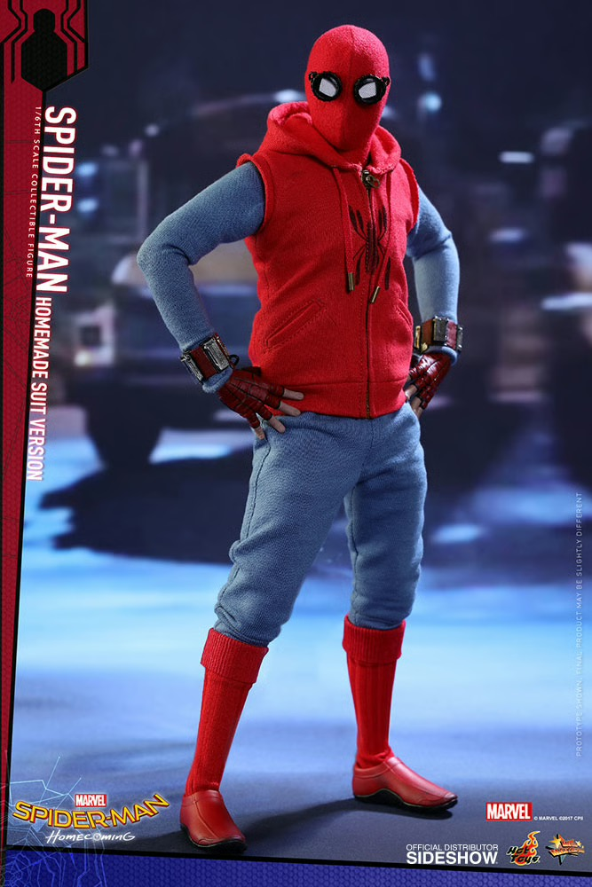
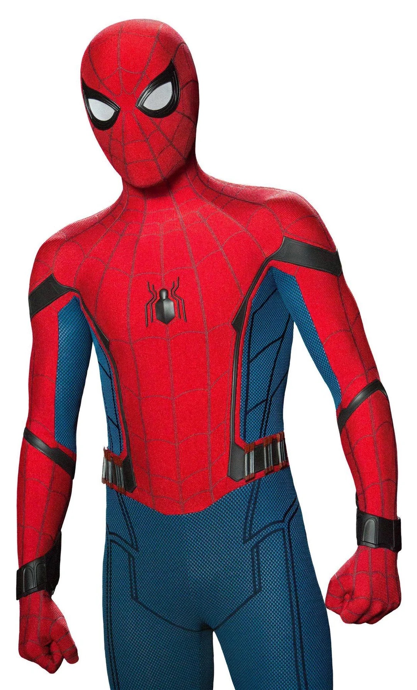
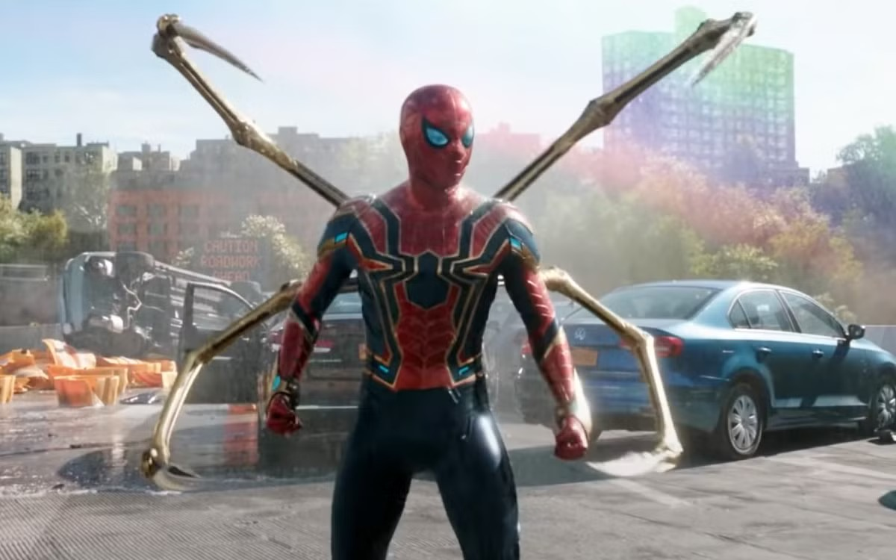
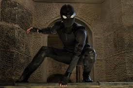
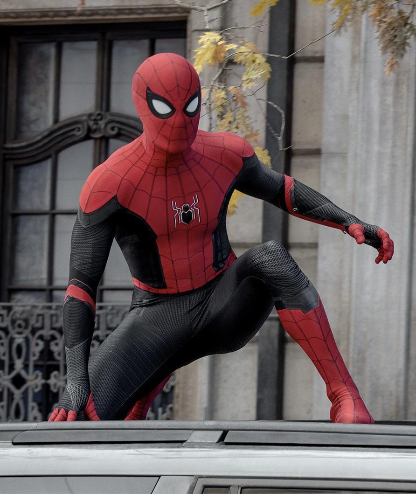
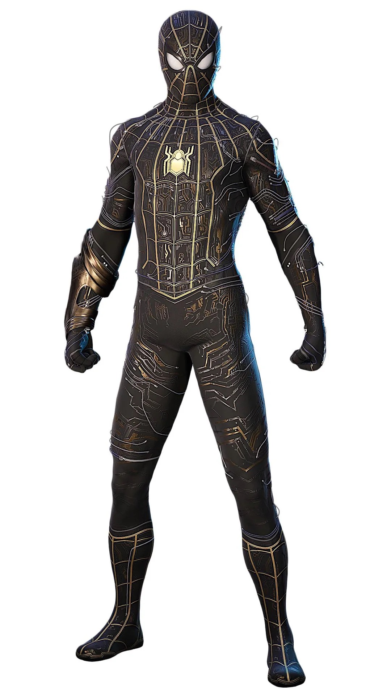
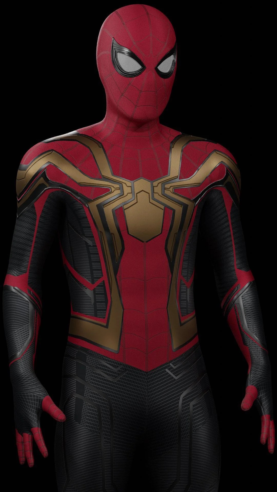
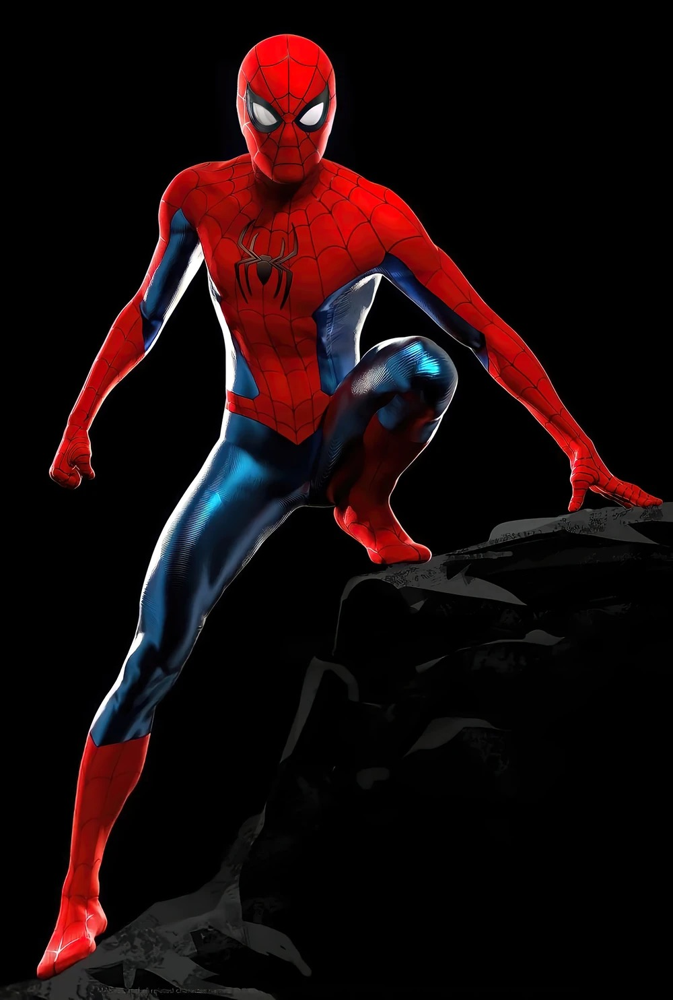

Складається з червоної толстовки без рукавів з намальованим логотипом павука, синього трико та окулярів, які допомагають Пітеру фокусувати зір через загострені чуття. Творець Пітер Паркер. Перша поява: «Перший месник: Протистояння» (2016) — на відеозаписах; повноцінно у «Людина-павук: Повернення додому» (2017).


Високотехнологічне червоно-синє вбрання. Має вбудований штучний інтелект "Карен", дрон-розвідник, парашут, сотні варіантів павутини та експресивні лінзи. Творець: Тоні Старк (Stark Industries). Перша поява: «Перший месник: Протистояння» (2016).
Опис: Нанотехнологічна броня, що зберігається в невеликому пристрої. Оснащена чотирма золотими механічними лапами, герметична (дозволяє перебувати в космосі) і надзвичайно міцна. Творець: Тоні Старк. Перша поява: «Людина-павук: Повернення додому» (2017) — наприкінці фільму; у дії — «Месники: Війна нескінченності» (2018).


Опис: Повністю чорний тактичний костюм у стилі мілітарі. Він не має особливих гаджетів, окрім відкидних окулярів, і призначений для маскування під час місій у Європі. Творець: Нік Ф'юрі (насправді Талос) та Щ.И.Т. Перша поява: «Людина-павук: Далеко від дому» (2019).
Опис: Червоно-чорна версія класичного костюма. Має покращену аеродинаміку, вбудовані крила-планери з павутини та передові системи захисту. Творець: Пітер Паркер (використовуючи технології Stark Industries на літаку Хеппі Хогана). Перша поява: «Людина-павук: Далеко від дому» (2019).


Опис: Це вивернутий навиворіт «Покращений костюм». Виглядає як чорна тканина з видимими золотими дротами та схемами всередині. Пітер використовував його, бо оригінал був заплямований фарбою. Творець: Пітер Паркер (ненавмисно). Перша поява: «Людина-павук: Додому шляху нема» (2021).
Опис: Поєднання «Покращеного костюма» та наночастинок від «Залізного павука». На грудях має великий золотий логотип павука, що утворився після того, як Доктор Октавіус повернув нанотехнології Пітеру. Творець: Пітер Паркер / Нанотехнології Старка. Перша поява: «Людина-павук: Додому шляху нема» (2021).


Опис: Класичний вигляд, натхненний версіями з коміксів. Костюм має яскраво-червоний та блискучий синій кольори, без жодних технологій Старка. Творець: Пітер Паркер (зшитий вручну на швейній машинці). Перша поява: «Людина-павук: Додому шляху нема» (2021) — фінальна сцена.